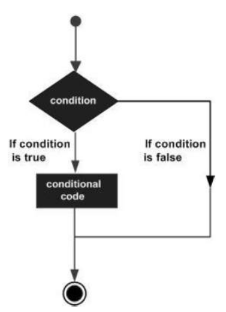

Decision making structures require that the programmer specify one or more conditions to be evaluated or tested by the program. It should be along with a statement or statements to be executed if the condition is determined to be true, and optionally, other statements to be executed if the condition is determined to be false.
Following is the general form of a typical decision making structure found in most of the programming languages −

Control Statements are elements in Source Code that control the flow of program execution. They are the following
If statement¶
Different forms of if statement¶
Form 1
if (expression)
statement;
You can use the if statement without braces { } if you have one statement.
Form 2
if (expression) {
Block of statements;
}
Example¶
/* Global variable definition */
int A = 5 ;
int B = 9 ;
Void setup () {
}
Void loop () {
/* check the boolean condition */
if (A > B) /* if condition is true then execute the following statement*/
A++;
/* check the boolean condition */
If ( ( A < B ) && ( B != 0 )) /* if condition is true then execute the following statement*/ {
A += B;
B--;
}
}
If …else statement¶
An if statement can be followed by an optional else statement, which executes when the expression is false.
if … else Statement Syntax¶
if (expression) {
Block of statements;
}
else {
Block of statements;
}
Example¶
/* Global variable definition */
int A = 5 ;
int B = 9 ;
Void setup () {
}
Void loop () {
/* check the boolean condition */
if (A > B) /* if condition is true then execute the following statement*/ {
A++;
}else {
B -= A;
}
}
If…else if …else statement¶
The if statement can be followed by an optional else if…else statement, which is very useful to test various conditions using single if…else if statement.
When using if…else if…else statements, keep in mind −
-
An if can have zero or one else statement and it must come after any else if’s.
-
An if can have zero to many else if statements and they must come before the else.
-
Once an else if succeeds, none of the remaining else if or else statements will be tested.
if … else if …else Statements Syntax¶
if (expression_1) {
Block of statements;
}
else if(expression_2) {
Block of statements;
}
.
.
.
else {
Block of statements;
}
Example¶
/* Global variable definition */
int A = 5 ;
int B = 9 ;
int c = 15;
Void setup () {
}
Void loop () {
/* check the boolean condition */
if (A > B) /* if condition is true then execute the following statement*/ {
A++;
}
/* check the boolean condition */
else if ((A == B )||( B < c) ) /* if condition is true then
execute the following statement*/ {
C = B* A;
}else
c++;
}
switch case statement¶
Similar to the if statements, switch…case controls the flow of programs by allowing the programmers to specify different codes that should be executed in various conditions. In particular, a switch statement compares the value of a variable to the values specified in the case statements. When a case statement is found whose value matches that of the variable, the code in that case statement is run.
The break keyword makes the switch statement exit, and is typically used at the end of each case. Without a break statement, the switch statement will continue executing the following expressions (“falling-through”) until a break, or the end of the switch statement is reached.
## Switch Case Statement Syntax
switch (variable) {
case label:
// statements
break;
}
case label: {
// statements
break;
}
default: {
// statements
break;
}
Example¶
Here is a simple example with switch. Suppose we have a variable phase with only 3 different states (0, 1, or 2) and a corresponding function (event) for each of these states. This is how we could switch the code to the appropriate routine −
switch (phase) {
case 0: Lo(); break;
case 1: Mid(); break;
case 2: Hi(); break;
default: Message("Invalid state!");
}
Conditional Operator ? :¶
The conditional operator ? : is the only ternary operator in C.
? : conditional operator Syntax¶
expression1 ? expression2 : expression3
Expression1 is evaluated first. If its value is true, then expression2 is evaluated and expression3 is ignored. If expression1 is evaluated as false, then expression3 evaluates and expression2 is ignored. The result will be a value of either expression2 or expression3 depending upon which of them evaluates as True.
Conditional operator associates from right to left.
Example¶
/* Find max(a, b): */
max = ( a > b ) ? a : b;
/* Convert small letter to capital: */
/* (no parentheses are actually necessary) */
c = ( c >= 'a' && c <= 'z' ) ? ( c - 32 ) : c;
Rules of Conditional Operator¶
- expression1 must be a scalar expression; expression2 and expression3 must obey one of the following rules.
- Both expressions have to be of arithmetic type.
- expression2 and expression3 are subjected to usual arithmetic conversions, which determines the resulting type.
- Both expressions have to be of void type. The resulting type is void.